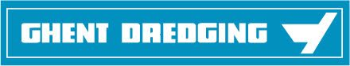
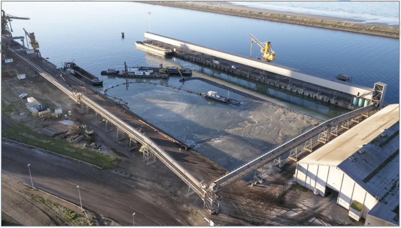
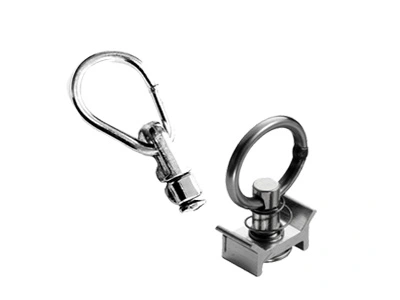

Mes expériences de stage
Stage de 3ème – Ghent Dredging

En troisième, dans le cadre du stage à réaliser pour l'oral du DNB, j'ai choisi d'aller chez Ghent Dredging France à Villeneuve d’Ascq car mon oncle travaillait et travaille encore dans cette entreprise. Dès la troisième, mon envie de devenir ingénieur prenait déjà sa place dans mes pensées.
Le statut d'ingénieur de mon oncle m'a donc permis de découvrir le monde de l'ingénierie et le travail en bureau d’études.
Ce stage était lié à des travaux de terrassement sur le port de Dunkerque, l'objectif de ces travaux était de combler une darse pour un client (Nord céréales) afin qu'il puisse y entreposer des silos à grains.
Travaux réalisés sur la darse pendant mon stage :

Ces travaux ont été réalisés dans le port de Dunkerque, ce qui m'a permis de découvrir une grande chaîne industrielle.
Durant ce stage, j'ai réalisé plusieurs tâches :
- Manipulation de tableaux Excel pour centraliser des informations
- Prélèvements de sable pour étudier sa qualité
- Réunions de chantier sur l’avancement des travaux
- Analyse d’un plan “geo xyz” pour déterminer des parcelles à draguer sur un fleuve.
- Observation des scaphandriers.
En savoir plus sur Ghent Dredging :
Ghent dredgingStage de seconde – Aero-Net
En seconde, dans le cadre d'un stage non obligatoire proposé par le lycée, j'ai choisi d'aller chez Aero-Net à Glomel afin d'observer le travail des ingénieurs dans le bureau d'étude.
Aeronet est une entreprise qui conçoit du matériel pour le transport de marchandises dans le domaine aérien et qui recycle des filets abîmés pour concevoir leur matériel. Ils travaillent aussi dans le domaine militaire pour lequel ils conçoivent du matériel de tout type comme des équipements de protection individuelle mais aussi des cordes et des grilles de transport.
J'ai pu observer de nombreux ingénieurs en action et chacun avait des tâches différentes à réaliser.
En l'occurrence, voici les tâches que j'ai effectuées :
- Manipulation de tableaux Excel pour modifier et classifier des informations
- Tests de résistance sur des sangles et connecteurs grâce à un banc de traction
- Vérification sur l'arrivage de nouveaux produits
Exemple de matériel que j'ai testé grâce au banc de tirage :

En savoir plus sur Aero-net :
Aero-net